KOIKE ARONSON INC.
MARKETING INTERNSHIP
Designed brand-consistent promotional materials, event displays, packaging concepts, and collateral for CNC cutting, welding, and positioning equipment.
FABTECH 2025
FABTECH is North America’s largest metal forming, fabricating, and welding trade show. During the summer of 2025, I worked as a marketing intern for Koike Aronson Inc., designing user experiences, print materials, and more.
During my internship, I developed my skills in following brand guidelines, collaborating with software developers and the marketing team, and creating website and product packaging prototypes. After completing my internship, Koike generously flew me to Chicago to see my work in person. The video showcases the kiosk displays, E-Ink displays, and print materials I helped create for the show. Seeing these projects come to life was a rewarding way to experience the impact of my work and see how design can contribute to a larger marketing experience.
01 // FIBERTEX ZERO KIOSK DISPLAY
One of Koike's largest products is the Fibertex Zero DBC Laser. During my internship, the marketing team asked me to develop a prototype a sales representative or customer could use to display information about the machinery. I worked alongside Koike's software developers and marketing team to produce this design. Within the kiosk, the user can easily navigate using arrows or just to a section using a drop down menu. On idle the kiosk displays a video compilation of the Fibertex Zero to grab the consumers' attention.
This project taught me how to collaborate with a developer to convert my designs to code and create a functional display connected with multiple screens and unique technology. I also gained experience working with sales representatives to create an interface that would generate a simple user flow for them to use to pitch the product to consumers.
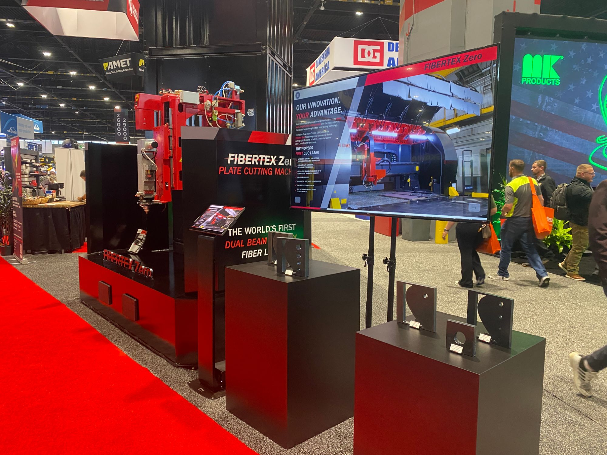
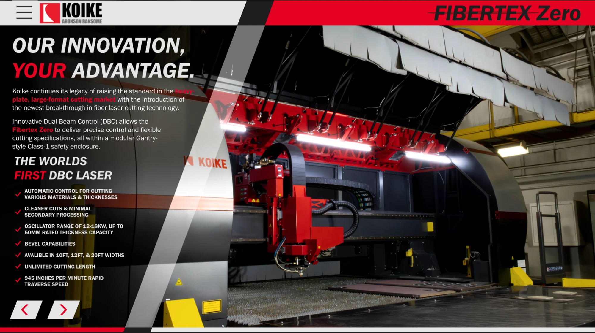
02 // PRINT MATERIALS
PORTABLES & GAS EQUIPMENT PAMPHLET
This pamphlet was used by Koike to hand out to consumers as an overview of the featured portable and gas equipment. While creating this pamphlet, I learned how to manage a full print project from selecting the company and template to the fine details in the design and purchasing the prints. I produced many handmade prototypes of this pamphlet to experiment with the design and explored the usage of the brand guide to its full extent. The most challenging part of this project was managing the quantity of information about each product without leaving out important details. The design aims to guide the user through an eye-catching layout with graphics, photos, and contrast so they may be introduced to the products.
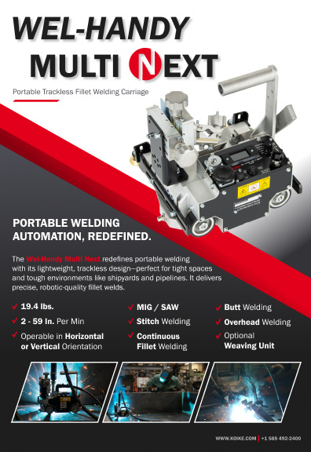
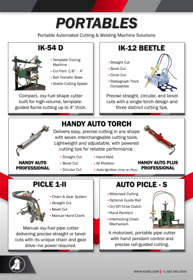
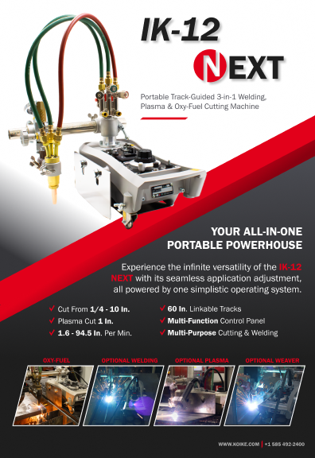
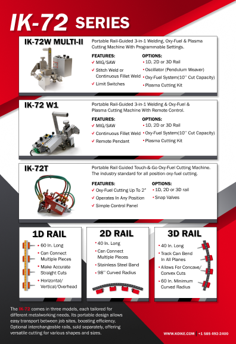
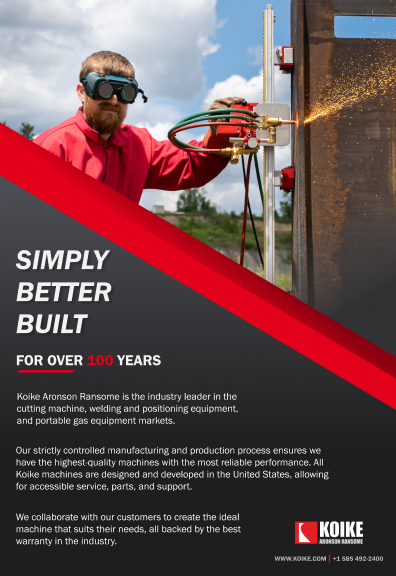
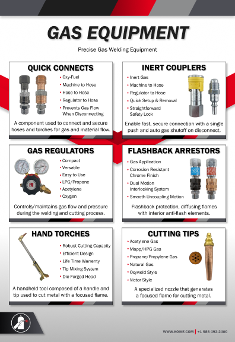
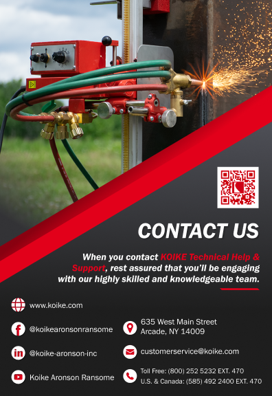
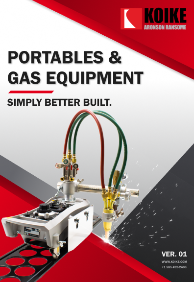
PULL BANNER
This banner was used as a representation of the product categories made by Koike. It was to be used at the majority of Koike's events and to be given to distributors to display in their stores.
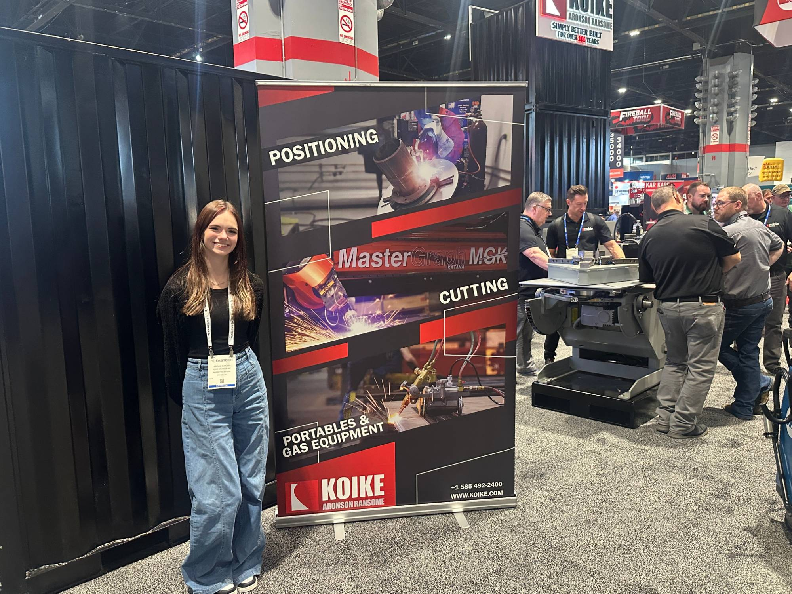
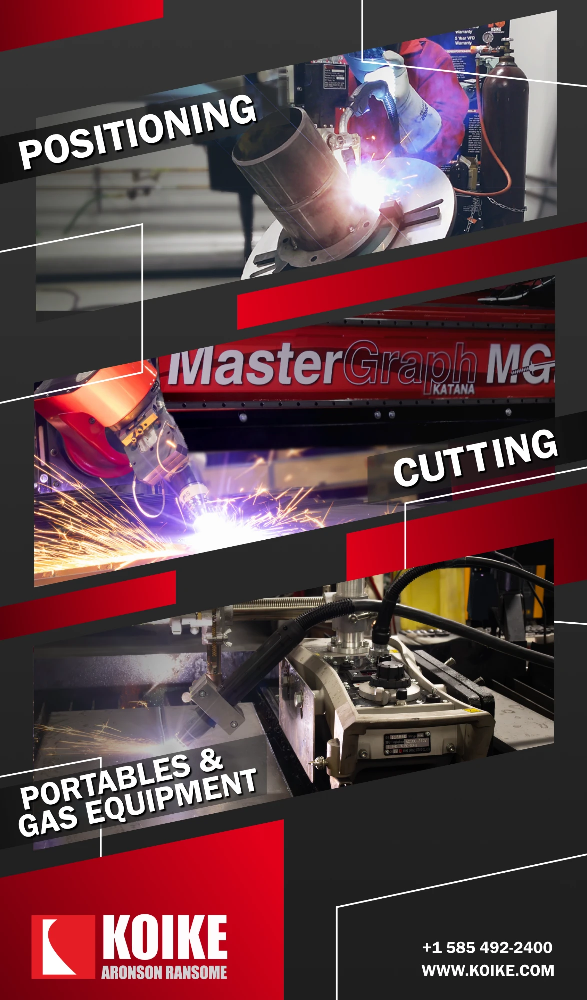
03 // GAS APPLICATION DISPLAY
PRICE TAGS, SALE SIGN & PACKAGING INSERTS
This display shows a variety of the gas application products from Koike. I was able to contribute many assets to this display. I helped create the price tags on the individual items then turn them into stickers that would apply to 3D printed stands. I also created a sale sign for customers to receive discounts on the items through the website. Lastly, I created product packaging inserts for the gas couplers. This was the largest part of the project as it would then be implemented into the products by the parent company in Japan. I originally was asked to create a concept design of a new box to place the product in rather than the plastic. I 3D modeled a box using dimensions from a foam insert that would hold the product. I then textured the box with the new packing design. As this design was finalized, we were told to convert the design to be an insert so the company could continue using the plastic casing. I then condensed the information and produced many mockups to be pitched. This new packing significantly improved the legibility of the product's features and created a more professional look. This was a completely new experience for me and taught me how to implement a design into something physical.
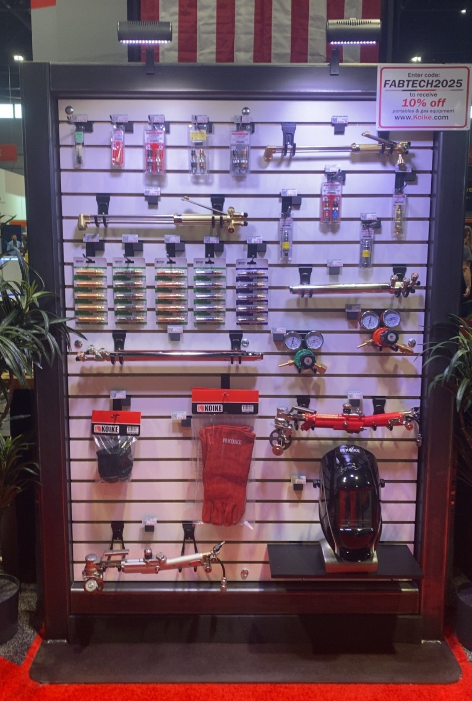
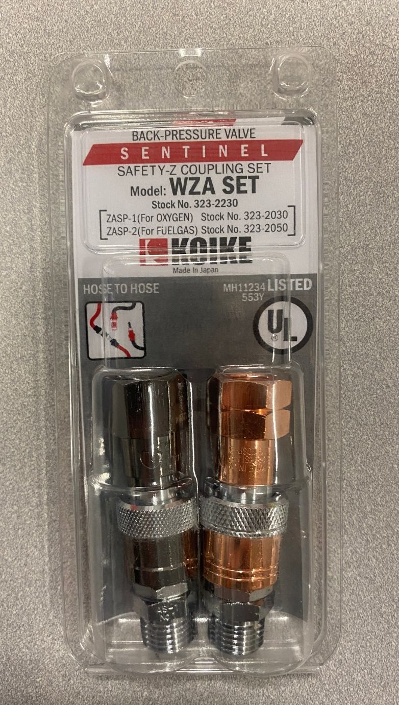
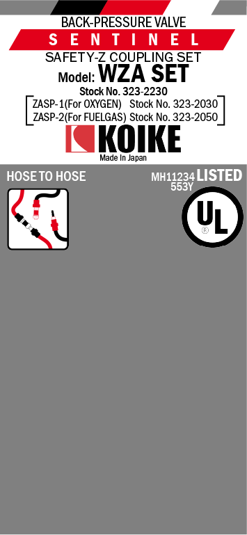
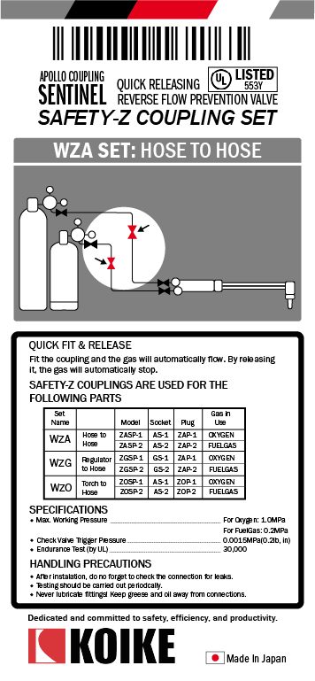
CONCEPT PACKAGING
04 // MORE PROJECTS FROM KOIKE
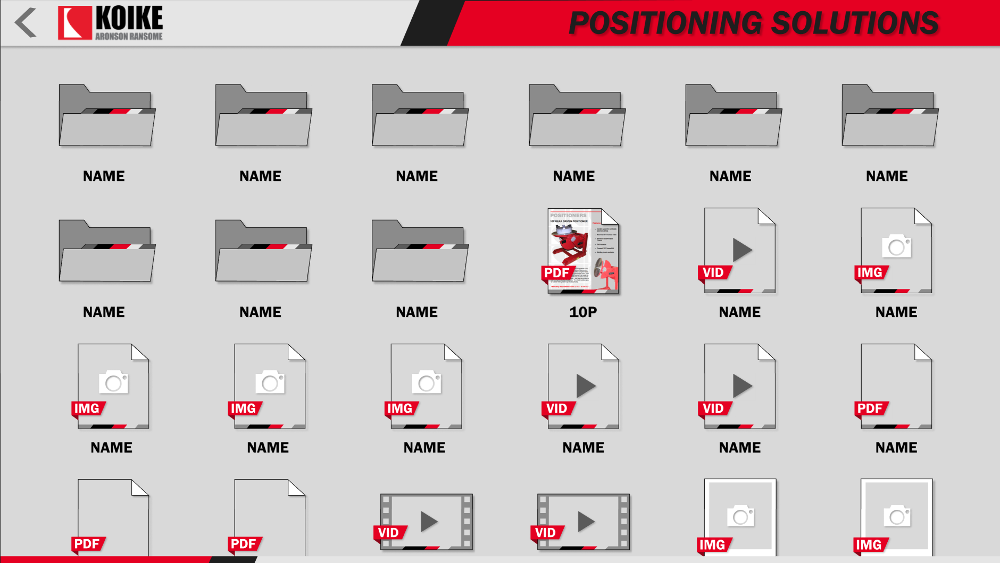
POSITIONER DISPLAY
This display functioned like the Fibertex Zero display. The user, a sales representative, could explore and expand files to show and explain the products to consumers. On idle the kiosk rotated through product images. This display was prototyped in Figma then the assets were transferred to the developer to turn into a system.
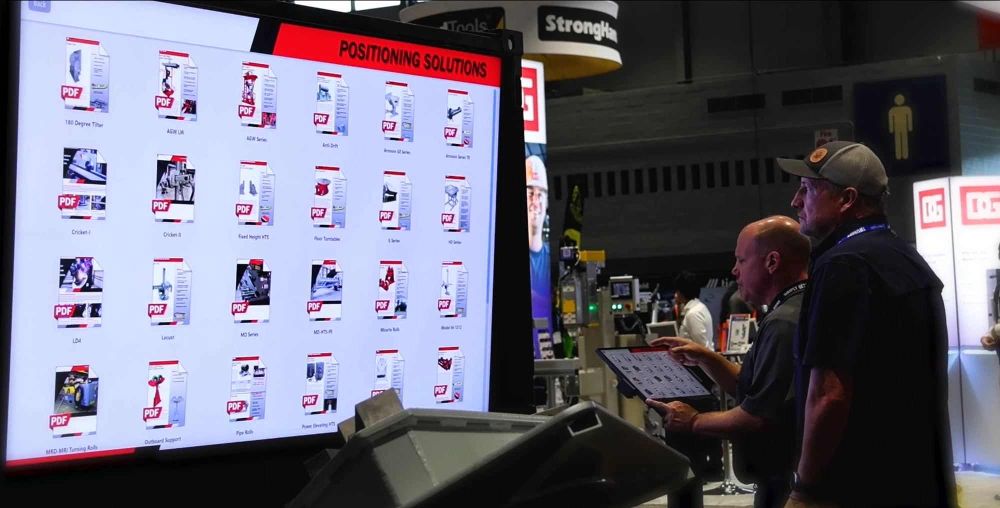
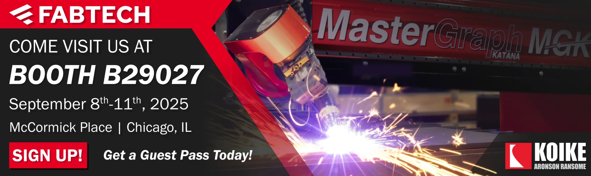
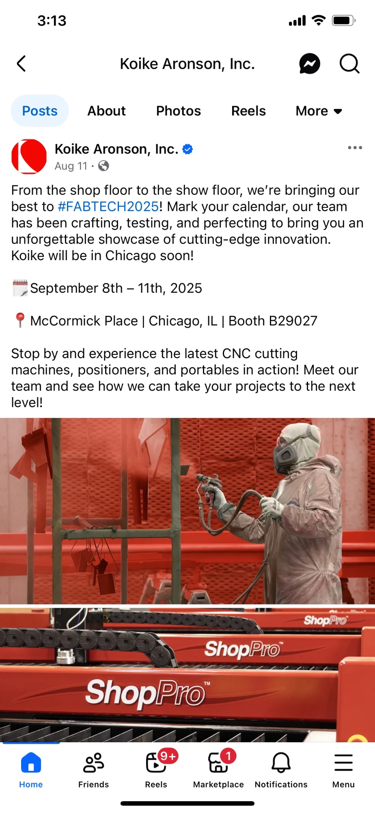
MARKETING & PUBLICITY
To prepare for the trade show, I helped to create a design that would be used as an email signature that would allow consumers to receive free tickets to the event. Making this email signature was my first exposure to email marketing. After creating this, I was asked to create a Facebook post about the event. I was able to explore the warehouses to get photos for the post then I did some simple Photoshop adjustments to clean them up. Before making the post I looked into some analytics on Facebook to learn more about social media marketing. I was then able to create the post by referencing the company's previous posts to maintain the brand image.
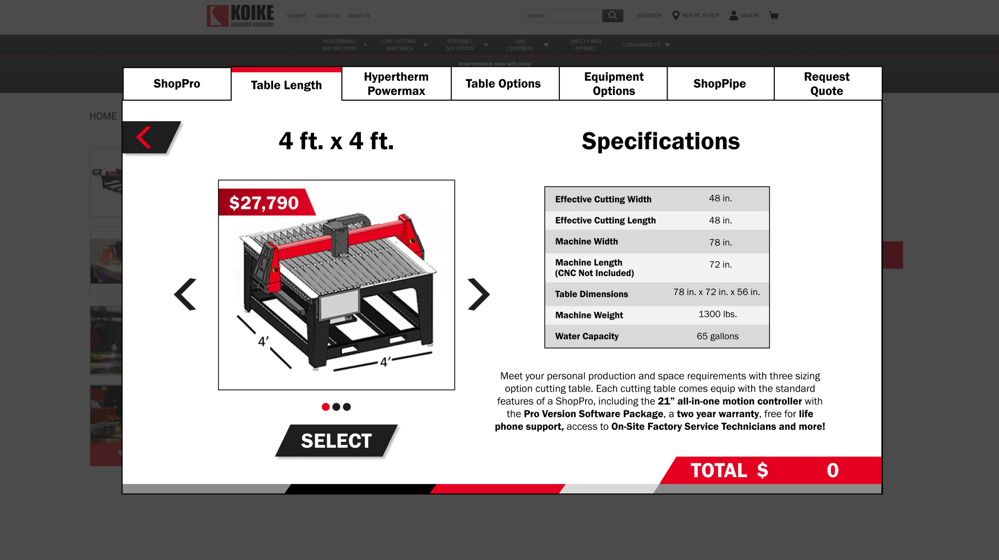
WEBSITE CONCEPT CONFIGURATOR
During my internship, I was asked to create a configurator for one of the most popular products, the ShopPro. This product requires the consumer to request a quote from a sales representative before purchase. Since this was Koike's most popular CNC machine, this consumed lots of the sales representatives' time. This configurator was created in Figma. It followed a guide of the options and pricing of the ShopPro that I was given by a sales representative. The design guides the user through all the options and specifications of the product. The price is calculated by using variables in Figma to provide an accurate representation of how it would work on the website. By using this configurator, it speeds up the purchase process significantly giving the team more time to work with customers or on other matters. Although this design hasn't been implemented its creation allows the team to see what is possible.
KEEP EXPLORING THE ARCHIVE
See more of my work in UI/UX, branding, print, and packaging design.
[ TRANSMISSION_CHANNEL ]
[✉] suplickiabby@gmail.com ➔ [✆] (716) 220-6374 ➔ LINKEDIN_PROFILE ➔ RESUME_DOWNLOAD ➔